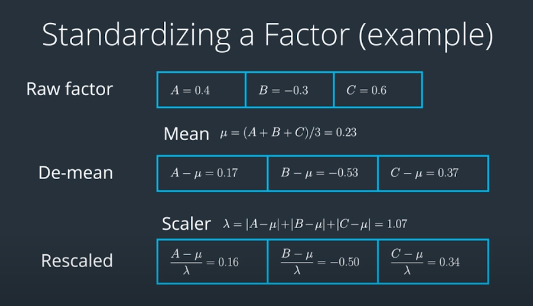
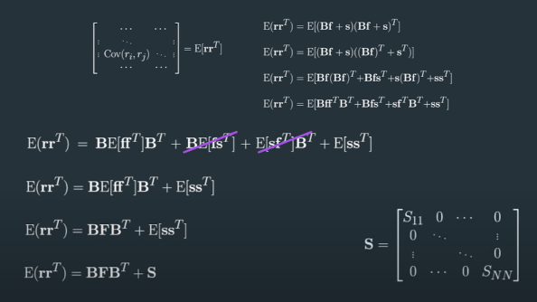
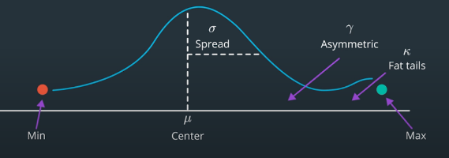

Factors
Table of Contents
1 Overview
A factor is a list of numerical values, one for each stock, potentially predictive of an aspect of the performance of these stocks in the future.
Other words, factors are signals that help suggest where to place bets in a portfolio of stocks and further suggest what relative magnitudes of those bets should be.
1.1 Categories
- Momentum
- Fundamental information
- Signals from social media
1.2 Example of a Factor
- Hypothesis: one-year return indicates momentum for next few days.
- Factor: one-year return of each stock in stock universe.
- Target
- Predict future price value? Difficult.
- Compare stocks using factor values? More feasible.
- Follow the hypothesis indication: Higher factor value -> hypothesize higher expected future return -> Higher weight
2 Standardizing Factors
- Sum of weights equals zero
de-mean\(\forall{i}\ x_i = raw_i - raw_\mu\)
- Sum of absolute values equals one (i.e. leverage ratio = 1)
re-scaled: \(\lambda=\sum_{i=1}^N|x_i|\) and \(\forall{i}\ x_i = \frac{x_i}{\lambda}\)
2.1 Example

2.2 Leverage Ratio
Leverage ratio in portfolio is sum of positions/notional.
\[ratio=\frac{\sum_{i=1}^N|p_i|}{Notional}\]
sum of weightsshould be 2 if the leverage ratio you choose is 2.
3 Factor Model
A factor model is a statistical model used to describe variability among observed correlated variables in terms of potentially smaller number of unobserved variables called factors. This method is used in several disciplines including biology, psychology, and business, as well as finance.
In finance, we interested in modeling the returns of several assets.
- Observed Variables: returns.
- Unobserved(Latent) Variables: factors returns.
3.1 Linear Factor Model
Returns(observed variables) are modeled as linear combinations of the factors returns plus error terms. \[r_i=b_{i1}f_1+b_{i2}f_2+...+b_{ik}f_k+s_i\] \[\boldsymbol{R}=\boldsymbol{BF+S}\]
- \(r_i\): the return on asset \(i\)
- \(f_1\): the value of factor return 1
- \(b_{i1}\)(stock exposures to factors): the change in the return on asset \(i\) per unit change in factor return 1
- \(k\): the number of factors
- \(s_i\)(error term or unexplained portion): the portion of the return on asset \(i\) not related to the \(k\) factors
3.2 Terminology
- Factor returns (the \(f_k\)) may be:
- macro-economic variables
- returns on pre-specified portfolios
- returns on zero-investment strategies (long and short positions of equal value) giving maximum exposure to fundamental or macro-economic factors
- returns on benchmark portfolios representing asset classes
- …
- \(b_{ij}\) coefficients may be called:
- factor exposures
- factor sensitivities
- factor loadings
- factor betas
- asset exposures
- style
- …
- \(s_i\) term may be called:
- idiosyncratic return
- security-specific return
- non-factor return
- residual return
- selection return
- …
3.3 Factor Model Assumptions
- \(Corr(s_i, f_k)=0\) for every \(i\) and \(k\)
- \(Corr(s_i, s_j)=0\) for every \(i\) not equal to \(j\)
- Residual \(s_i\) is specific or "idiosyncratic" to asset \(i\)
3.4 Covariance Matrix of the Asset Returns
\(\boldsymbol{R}=\begin{bmatrix} r_1 \\ \vdots \\ r_n \end{bmatrix}\)
\boldsymbol{B}=\begin{bmatrix}
b_{1,1} & ⋯ & b_{1,k}
\vdots & \ddots & \vdots
b_{n,1} & ⋯ & b_{n,k}
\end{bmatrix}$
\(\boldsymbol{F}=\begin{bmatrix} f_1 \\ \vdots \\ f_k \end{bmatrix}\)
\(\boldsymbol{S}=\begin{bmatrix} s_1 \\ \vdots \\ s_n \end{bmatrix}\)
- n: number of companies
- k: number of factors
Based on assumptions, calculate the covariance matrix of the asset returns – Matrix\([Cov(r_i, r_j)]\). \[Cov(X,Y)=E[(X-\bar{X})(Y-\bar{Y}))]=E[XY]\] \[Cov(\boldsymbol{RR^T})=E[\boldsymbol{RR^T}]=E[(\boldsymbol{BF+S})(\boldsymbol{BF+S})^T]=\boldsymbol{BFB}^T+\boldsymbol{S}\]
 Video
4 Factors
Two types of factors
- Alpha Factor
- Predictive of mean, drivers of mean returns.
- Risk Factor
- Predictive of variance, drivers of volatility.
Portfolio should be minimally exposed to risk factors. We can try to place constraints on \(\boldsymbol{B^T F}\) that only apply to factors that we think are drivers of volatility. However, we don't constrain the factors that are drivers of mean returns. So we drop alpha factors from B matrix.
Hence, in practice,
- B is the risk factor loading matrix only.
- F include risk factors only.
- S includes all other variance. S says nothing explicit about alpha.
Alpha Factors add to objective function in optimization.
4.1 Alpha Factors
- Drivers of mean returns
- Use alpha factors as signals of expected future return(buy/sell signals).
- Contributes a smaller part of the total return.
- Alpha factors are less well-known by the investment community,
4.2 Risk Factors
- Drivers of volatility
- Use risk factors to control portfolio risk.
- Contributes more to total return.
- Risk factors are well-known by the investment community. The investors trade away the mispricing.
- Neutralize portfolio's exposure to risk factors.
4.3 Price-volume Factors
- Available for many stocks
- Refreshed regularly
- Extremely helpful in quant investing which involves portfolios of many stocks.
- Returns
- close to close returns
- open to close returns (intraday)
- close to open returns (overnight returns)
- Moments of Returns
- Mean: \(\mu=E[r]\)
- Variance: \(\sigma^2=E[(r-\mu)^2]\)
- Skew: \(\gamma=E[(\frac{r-\mu}{\sigma})^3]\)
- Kurtosis: \(\kappa=E[(\frac{r-\mu}{\sigma})^4]\)

- A positive skew means there are more extreme values in the positive side of the distribution.
- Kurtosis describes how much of the distribution occurs in the left and right tails.